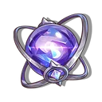

Экспедиции открываются через Tab → Экспедиции. Энергию не тратят, награда - раз в неделю. Перед первым заходом игра показывает подсказки по боссам.
| Сложность | Игроков | Пропусков | Чем отличается |
|---|---|---|---|
| Одиночный | 1 | меньше всего | Учебный режим, награда ниже. Порог надёжности как на сюжете. |
| Сюжет | 2-4 | средне | Все механики, обычная награда. |
| Героический | 4-8* | больше | Порог надёжности выше, боссы сильнее. |
| Легендарный | 4-8* | больше | Самый высокий порог и лучшая награда. |
* Исключения: Логово Воронова крыла - 2-4 игрока; Темница разума - героический и легендарный ровно 8; Литургия стужи - сюжет и героический ровно 4. Вход: одиночный 4 пропуска, сюжет 6, героический и легендарный 10. У каждого босса: ежедневная награда 1 раз, недельная - 3 раза.
Твоя надёжность должна быть не ниже числа - тогда пройдёшь всех боссов. Список идёт от лёгких к сложным.
| Экспедиция | Одиночный | Сюжет | Героический | Легендарный |
|---|---|---|---|---|
| Шах и мат | 4500 | 4500 | 5000 | 5000 |
| Ход королевы | 5000 | 5000 | 5000 | 5000 |
| Храм судьбы | 5500 | 5500 | 6000 | 6000 |
| Последнее откровение | 5800 | 5800 | 6300 | 6300 |
| Логово Воронова крыла | 6500 | 6500 | 7000 | 7200 |
| Хребет исполина | 6800 | 6800 | 7200 | 7400 |
| Сокрытое сердце | 7000 | 7000 | 7400 | 7600 |
| Литургия стужи | 7000 | 8000 | 9800 | нет |
| Предел погружения | 7800 | 7800 | 8200 | 8400 |
| Темница разума | 8000 | 8000 | 8400 | 8600 |

Сфера парадокса| День | Экспедиции |
|---|---|
| Понедельник | Королевский гамбит · Темница разума · Логово Воронова крыла · Сокрытое сердце |
| Четверг | Предел погружения · Литургия стужи · Капсула памяти (Храм судьбы, Последнее откровение) · Хребет исполина |
Сброс пн · Череп, Карлотта, Боджи
Сброс пн · Кракен
Сброс чт · Кондор Обращённый, Пожиратель воли, Сатурния
Выбери класс или специализацию.
Снаряжение 75-го и 80-го уровней, бонусы комплектов и оружие по специализациям. Где добывать снаряжение
Пилигрим идёт первым как стартовый комплект. Выбор класса подбирает оружие и показывает советы по комплектам. Можно собрать любой комплект.
Как мы подбираем экипировку. Рекомендации по классам основаны на внутриигровых описаниях умений, бонусов комплектов и эффектов оружия. Мы смотрим, какие бонусы сочетаются с механиками класса и насколько удобно активировать их в бою. Это общие рекомендации. Лучше самому проверить в бою, какие связки подходят твоей сборке и стилю игры.
Загружаю снаряжение…
Карточка предмета недоступна.
Загружаю предметы…
Укажи уровни и цены из окна закалки. Шанс можно изменить для каждой ступени. Для +15 и выше учтена защита от неудач.
Бюджет рассчитан по среднему числу попыток с учётом откатов. Звёзды пробуждения, прочность и материалы можно учесть в цене попытки в пересчёте на золото.
Выбери вещи из каталога снаряжения. Впиши базовые статы и прибавки от закалки, арретиров, рун и других улучшений.
Проценты и единицы считаются отдельно. Для расчёта с выбранным бафом комплекта добавь его значения вручную. Условные эффекты в бою зависят от того, когда они срабатывают.